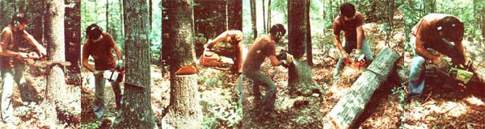

STAFF PHOTOS
One of MOTHER's lumberjacks shows off a variety of mid-sized chain saws while demonstrating the technique for felling and sectioning an oak. LEFT TO RIGHT: The woodsman makes his first cut (with a Stihl 031) perpendicular to?and on the same side as?the direction he wants the tree to fall ... slicing downward at a 300 angle for 113 of the oak's diameter. Then (using a Husquarna 61) our man cuts straight in to meet the previous incision and form a notch. Next, having planned an escape route 450 away from the line of fall, the saw man starts the felling cut (employing a Homelite XL 12). This slice angles downward toward a point two inches above the parallel notch cut, but stops three inches short of intersection. Now our logger moves to the escape?route side of the trunk and works the felling cut in (with a McCulloch 610) until the ""spine"" is too weak to support the tree. Timber! Once felled, the tree must be sectioned ... or ""bucked"", in logging jargon. Here our timber chopper bucks a log suspended at both ends by first sawing into the wood from above (utilizing an Echo 500 VL) and then completing the cut from below (with a Poulan 306) ... so that the wood falls neatly away from the saw's blade.